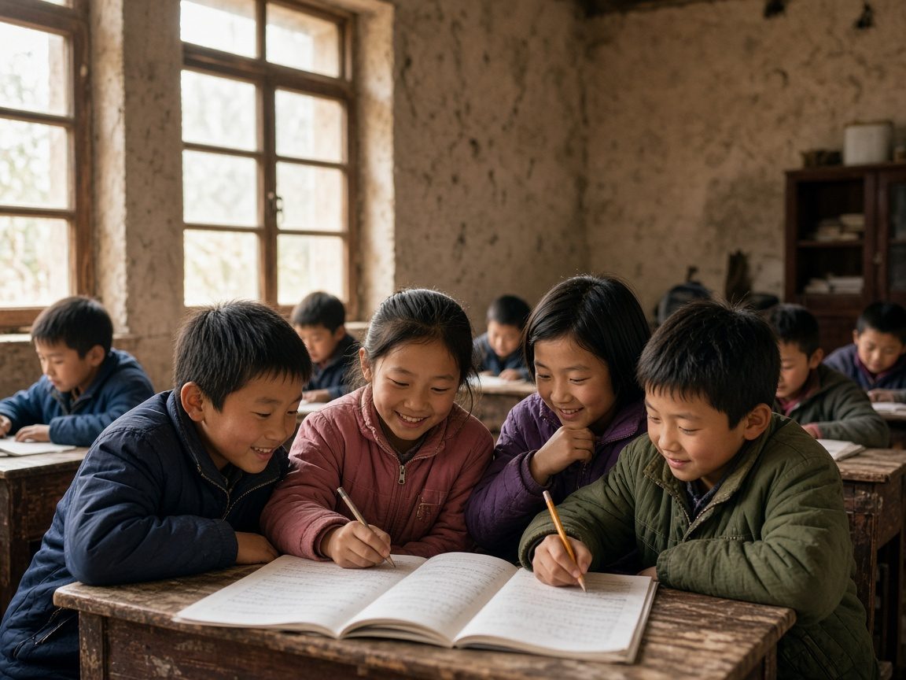
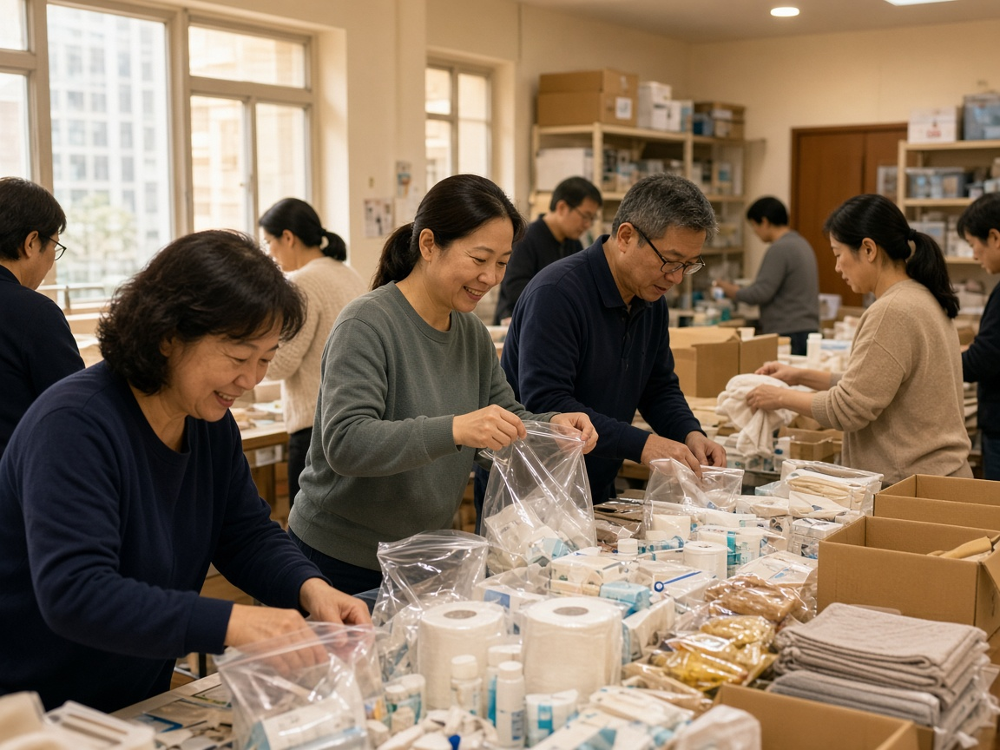
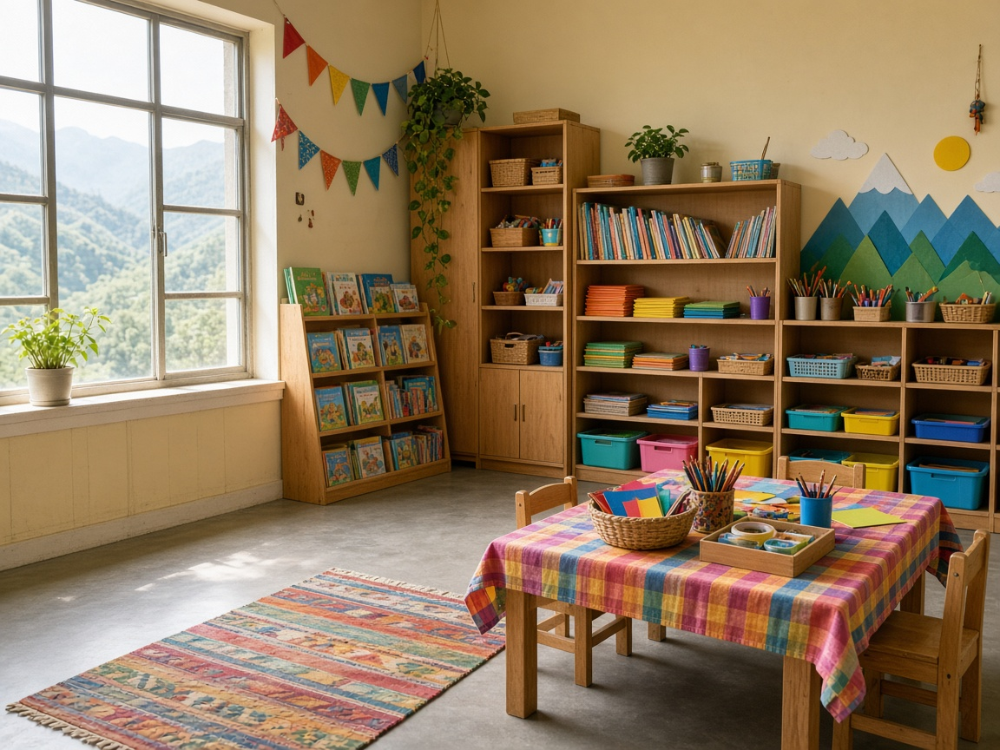
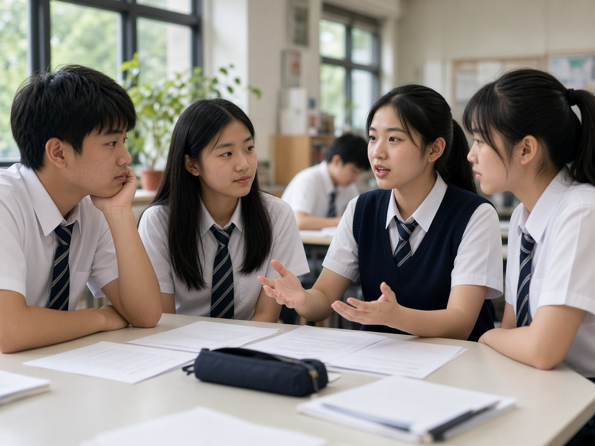
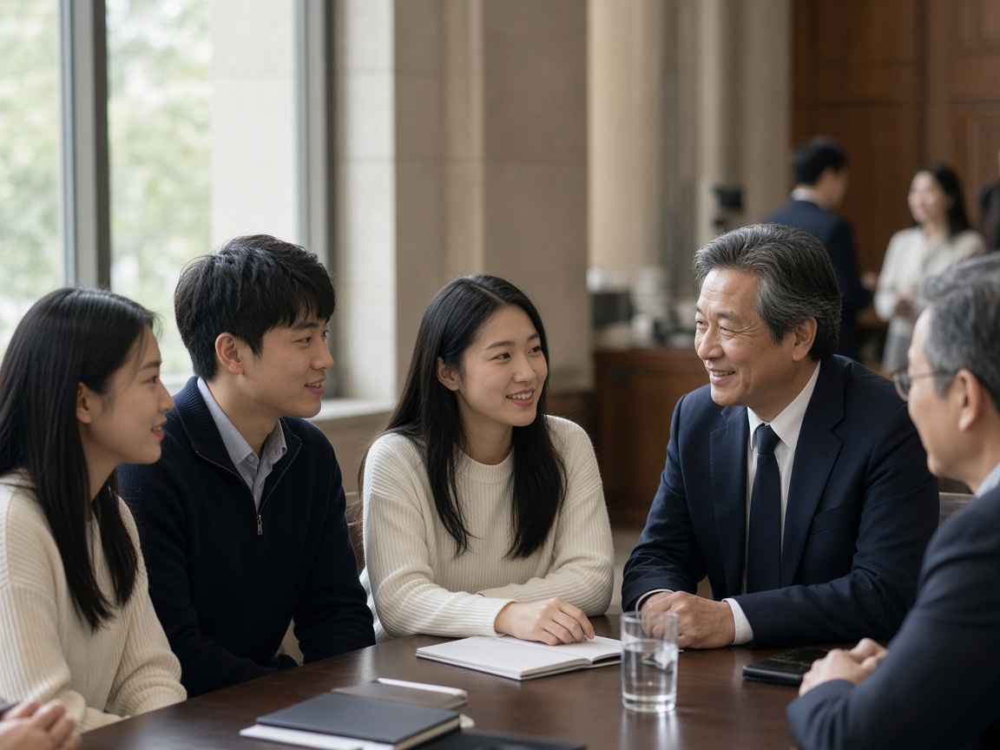

2013年
2013年8月，創辦人暨主席創辦人到中國農村參與扶貧工作，初次目睹大批「留守兒童」的境況。她走訪多處貧困偏遠地方，看見年邁祖父母照顧孩子、孩子因缺乏父母之愛而內心封閉、夫婦長期分離導致家庭破碎等令人心酸的故事。主席立志回應國家呼籲關愛農村弱勢社群，於2013年12月創立希望同行，開展中國留守兒童關愛工程。

希望同行在過去的日子努力不懈，致力在內地及香港推動慈善公益工作，讓愛飛揚，為年青一代和弱勢社群注入正能量，愛與盼望。未來將會秉承希望同行精神 — 「有使命，肯承擔，有藍圖，有團隊」為祖國及香港的社會繼續作出貢獻。
2013年8月，創辦人暨主席創辦人到中國農村參與扶貧工作，初次目睹大批「留守兒童」的境況。她走訪多處貧困偏遠地方，看見年邁祖父母照顧孩子、孩子因缺乏父母之愛而內心封閉、夫婦長期分離導致家庭破碎等令人心酸的故事。主席立志回應國家呼籲關愛農村弱勢社群，於2013年12月創立希望同行，開展中國留守兒童關愛工程。

希望同行在香港舉辦分享會讓更多人了解留守兒童需要，並到河南、四川、湖北和雲南拜訪及舉辦慈善講座，鼓勵當地留守婦女自發關愛兒童。為他們舉辦「農村義工老師培訓」、編製教材及捐贈電腦等器材。同年7月，第一屆「快樂兒童暑期活動」在河南、湖北和雲南舉行，讓留守兒童在安全環境下學習，享受愛和被愛，度過快樂有意義的暑假。

組織義工編製為農村孩子度身訂造的教材，主題包括世界視野、品格探討、真理故事、趣味英語、環保意識及益智活動，並編製「快樂兒童暑期活動」學生手冊，初版印刷達五萬本。同年開始「精英義工老師培訓」，服務拓展至湖南和重慶，並在香港拓展社區關愛活動，到北美華人聚居城市分享慈善理念，凝聚華人關心祖國。
申請資助參與關愛留守工程的農村單位躍升至2,300間，遍及內地9個省份。12月與國家5A慈善團體合作慈善團體合作，成立「合作夥伴專項」，全面開展及深化扶貧和關愛留守人群服務。繼續在香港和北美分享以愛同行的慈善理念，幫助有需要的弱勢社群。
開始進入香港不同學校分享愛和正向價值的理念。內地服務拓展至14個省份，與合作慈善團體全力推動關懷留守家庭，進行探訪、深入了解及關顧需要。服務趨向專業化，除2014年已提供的牙醫義診外，更新增視檢配鏡服務。
服務拓展至18個省市，資助超過1,000個農村單位設立「關愛留守服務點」，為留守家庭提供更全面、多元化和恆常性的社會關懷服務。於香港不同中學分享生命教育課題和回饋社會理念，幫助孕育未來社會棟樑。
得到數十間中學認同，全面開展香港校園生命工程，為學生提供優質生命教育、師友同行及領袖培訓。於內地設立中學及大學助學計劃，幫助留守及困境兒童在學習和生活上的需要，並為農村小學建設「愛學坊」多功能活動室，優化教育質素。

新冠狀病毒肆虐湖北省，希望同行立時啟動緊急醫療援助金，透過合作慈善團體購買醫護專用設備、消毒液及口罩等送贈湖北武漢市重點醫院，全力支持前線醫護人員抗疫。疫情下善用科技網絡，在香港及內地繼續拓展校園服務，並舉辦「香港學界多媒體創作比賽」，讓學生在停課不停學期間善用時間創作。
推行首輪「疫有祝福．全人關懷」計劃，幫助香港基層學生家庭200戶及提供免費青年活動。同年舉辦「香港學界創意達人比賽」，以「疫世代．得與失．新常態」為題，讓學生以積極正面心態回應當下及未來，並為參賽學生舉辦兩天創意達人工作坊，由資深媒體專業製作人擔任星級導師，擴闊眼界、提升能力和自信心。
第五波疫情下推行「疫有祝福．全人關懷3.0」計劃，幫助香港基層學生家庭1,400多戶及提供連串免費青年及家長身心靈關懷活動，並推出全新網上優質教育平台。合作夥伴專項之「未來工程師助學計劃」獲第六屆「江蘇慈善獎」最具影響力慈善項目；主席獲頒「愛心獎」及「疫境自強 傑出人物獎」。

捐贈土耳其大地震支援振災人民幣350萬元；繼續資助內地公益機構展開社會關懷服務；職業中學及大學助學項目學校增至22所；在香港舉辦不同活動慶祝希望同行成立10周年；香港校園生命工程除繼續「生命教育3.0計劃」外，更與20間中學合作開展第一屆為期三年的「英才培育獎學金計劃」，培育數百位品格良好的中學生成為社會未來棟樑。
主席榮獲香港嶺南大學頒授榮譽院士名銜；於嶺南大學開展多個校園項目，包括「英才領袖培育獎學金計劃」，栽培大學生成為社會未來精英。
